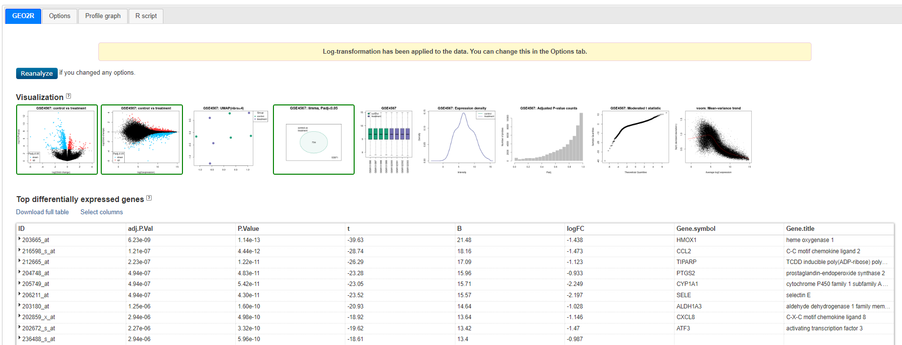
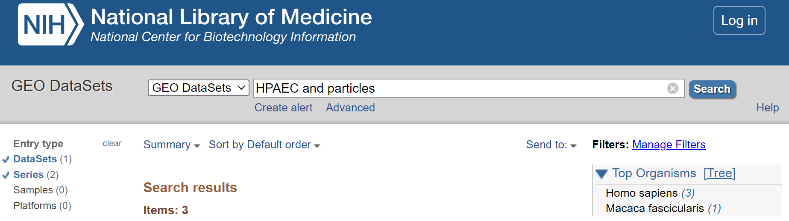
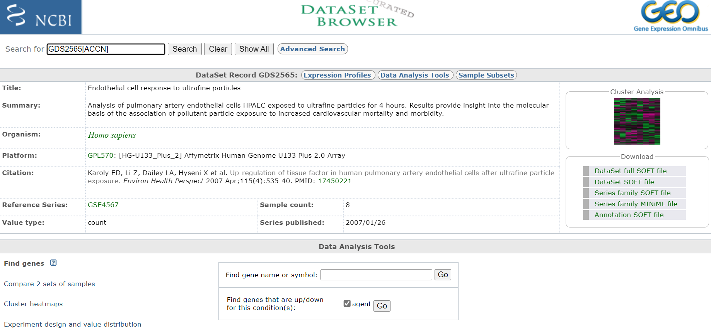
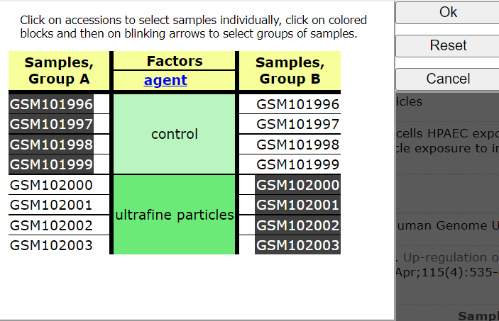
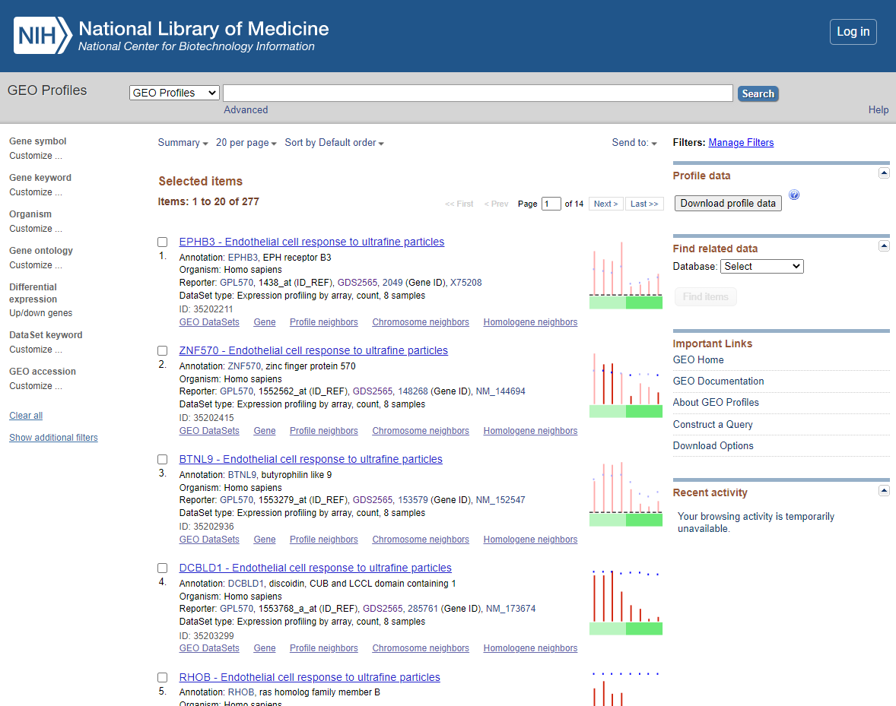

Mining Gene Expression Omnibus (GEO)
All research articles published in peer-reviewed journals must submit the data (raw or processed) to an accessible data archive - the most commonly used being NCBI GEO. Unfortunately the standards and types of data acceptable for submission to GEO have changed over the years from microarray datasets that were uploaded fully processed and ready to analyse - Processed Datasets to current practices where links are provided to the raw fastq file deposited within the Short Read Archive (SRA). Below I have provided instructions of how to create gene lists from each data type provided by GEO (I am sure I would have missed one but hopefully the list cover the majority of the options).
2.1A SRA - Fastq and Annotation (Serise Matrix Files)
Provision of SRA and annotation files in teh forms of a ‘Serise Matrix Files’ requires you to download the data and create count file by mapping as described in [tutorial 5.1] (https://peter-kille.github.io/Bioinformatics_TrainingWeb/5.1_RNAseq_processing.html). Additionally you will need to reconfigure the annotation provided in the Serise Matrix Files into a metadata file format that can be used for SARTools (DESeq2) pipeline for DEG generation tutorial 5.3.
SRA NCBI download
Samples preconfigured for SRA download ofen have SRA Run Selector as a link at the bottom of the entry. Approaches to downloading SRA data and annotation is documented in NCBI Guide and there is a relatively straightforward read achive website to make this very easy through a browser interface.
ENA as an alternative portal to SRA
The European Nucleotide Archive (ENA) provides a mirror of the SRA and sometimes both teh serach functions and the download can be easier. If you have a list of accession numbers you can calculate the download addresses for the accession using a simple FTP guide.
Extracting metadata
Metadata is contained with the ‘Serise Matrix Files’ - key annotation parameters are usually found under the ‘!Sample_characteristics_ch1’ or ‘!Sample_treatment_protocol_ch1’ with the SRA code under ‘!Sample_relation’. However, both the NCBI and SRA dowbload tools provide the ability to download annotations as a TSV - but sadly sometimes you have to go digging into the ‘Serise Matrix Files’ or even the papers !!
This example is used as the data for workshop 5.1
The data is derived from NCBI Bioproject PRJNA658134 Geo dataset GSE156507. For workshop 5.1 I have selected only those L3 stage samples and sub-sampled the data from the 60M reads deposited to ~10M reads so that it can be processed with the workshop but if you want you could download and try and use the full dataset
2.1B Raw Count matrix (CSV/TSV) and Annotation (Serise Matrix Files)
Many upload now contain a count file and the annotation contained within the ‘Serise Matrix Files’. In this case you can extract the metadata from the annotation file as described above - ## Extracting metadata.
To use the count file TSV matrix file you will need to split it into separate files and save it to a folder called ‘FeatureCounts’. Each file needs to be named by the sample name - usually given as the header for the count column and contain 2 tab deliminated columns the gene ID and the count - no headers. You then need to encorperate these file names into your metadata file for SARTools (DESeq2) and you can run generate DEGs as descrived in tutorial 5.3.
2.1C Geo2R configured unprocessed raw counts and group metadata
Some data has been uploaded into GEO in a form that allows it to be analysed with a web-based R script based on DESeq2 - called Geo2R. The metadata for these data sets have been extracted and can be used to ‘define’ groups for subsequent DEG generation.
1. Identify a Geo2R compatible dataset
Select un-processed series (should be number 2 - it will have icon < Analyze with GEO2R > at the end of the entry)
Click on < Analyze with GEO2R >
Now Define groups by click clicking the < Define Group pull > down and create groups ‘control’ and ‘Treatment’ (enter group name and press enter). Click on each sample in list and associated it with one of your group (you can hold ctrl down to select multiple entry before associating them with the group).
 Select Groups to compare
Select Groups to compare
2. Customise the Option and Analyse
Select < Options > and customise as shown below:
 Geo2R Options
Geo2R Options
Select < reanalyze >
Will will now see a Processing icon - this may take a minute or two.
3. Generate a DEG list
You will now see a table and a series of Visualisations - review the visualisation taking note of what each are showing you.
 Geo2R results
Venn diagram showing GSE4567: Limma, Padj<0.05 - 704 genes - this is the set we will use
Click on < Explore and download, control vs treatment and Download Significant genes >
This will give you a Tsv you can open in excel
2.1D Processed dataset
Original microarray data and early RNAseq data were upload as fully processed datasets allowing easy (albeit simple) webased analysis. You can identify tehse both as they display a heatmap icon but also because they are listed as ‘datasets’ by GEO.
1. Search for data of intereste
Go to Geo DataSets: (https://www.ncbi.nlm.nih.gov/gds/)[https://www.ncbi.nlm.nih.gov/gds/]
 GEO_DataSet Search
GEO_DataSet Search
now select
2. Refine search to only show ‘DataSets’ and ‘Series’
Select < DataSets and Series > from the left hand menu.
 Refine to DataSets
3. Select procesed dataset (should be number 3 in list and have a heat map icon to the right)
Click on title < Endothelial cell response to ultrafine particles > to select DataSet
 Entry Page
Take notes off all pertinent information about the experiment, including species and what microarray platform was used. In this case experiment was conducted on rats and analysed on an Affymetrix Human Genome U133 Plus 2.0 Array. Download any publication available. Also, if you are interested you could have a look at the cluster analysis on the right hand site. This will show you how the relationship of the expression profiles from each sample relative to each other. If the experiment was successful, all samples of a certain treatment should cluster together.
4. Compare experiment samples
Click <Compare 2 sets of sample>
Choose <test e.g. One-tailed t-test (A > B)>
Choose
Click on: Step 2: Select which Samples to put in Group A and Group B
 Select Groups to compare
Choose < Query Group A vs B >
You should now see a list of the following DEGS
 DEG List
5. Download DEGs
You have >100 DEGs but the page only displays the first 20. Before downloading DEGS change the items per page from 20 to 500.
 Items Per Page
Items Per Page
Select < Download profile data >
and you will be prompted to save the profiling of the DEGs displayed as default file name <profile_data.txt>
Save to appropriate location. If needed Select Page 2…. of the DEGS and repeat the download process.
Repeat this process for <test e.g. One-tailed t-test (B > A) significance level 0.001 >_
6. Open and Merge DEG lists in Excel
The DEG lists show the gene list with there relative expression level (normalised) and annotation for the genes involved (annotation shown in columns BG ->). For Our next steps we will use the Gene symbol that is in Column BH.